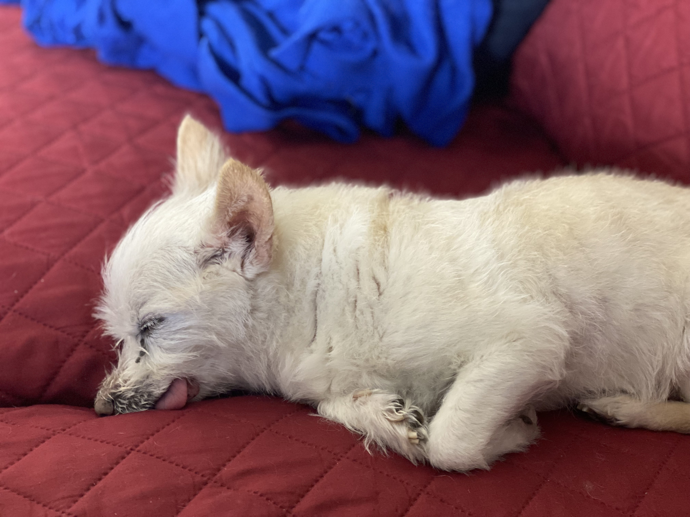
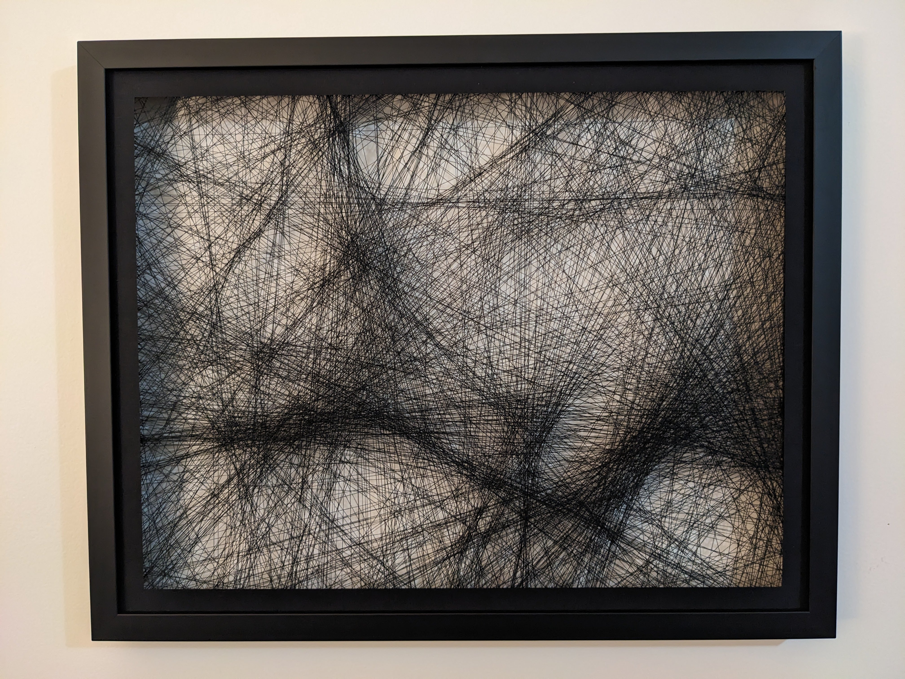
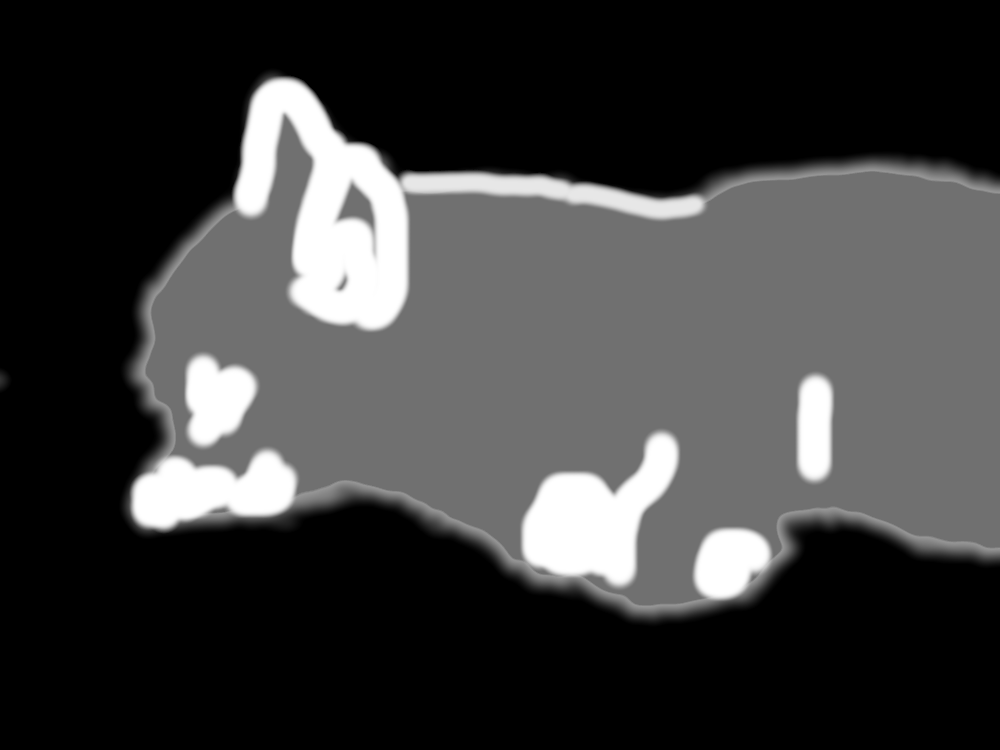

This post is a high-level overview of how I wrote code generate instructions that turns an image into instructions to make string art portraits:


Many others have done this and taken it well beyond what I do! Here are a few representative samples:
Compared to other algorithms, mine is distinct in a few ways:
Here's how a simple algorithm might work, given a list of nail positions and a target image:
a, b, and c are points, then the list [a, b, c] represents the two lines (a, b), (b, c).[a, b, c], try removing b and replacing with other points like y, r, d, or That's it! This algorithm works surprisingly well and it guarantees that all of the lines are connected to each other, like a single long thread.
Compared to a greedy algorithm, this one is much slower but will work with any set of nails/notches since you know all of the lines will be connected.
In practice, the simple non-greedy algorithm tends to create lots of extra lines that don't actually contribute much to the image. By removing the constraint that each line segment must be connected to the next line, we can add a step that removes lines that contribute too little to the image. This allows us to generate an image with much less string, so it's easier to assemble.
Unfortunately, this creates a new problem of needing to connect the lines but it's easy to address: after generating a list of lines, we can greedily try to connect the lines to each other and then connect the remaining lines by adding a few new ones.
No matter what algorithm you use, there are always trade-offs. Drawing a line will usually make some part of your generated image more similar to your target image in some areas and more different in other areas. -- The only change to the algorithm is to multiply the brightness of the mask image by the difference of the generated and target image at each pixel. Another equivalent way to use the mask is to always multiply the mask brightness by the generated and target images before calculating their difference. Parts of the generated/target images where the mask image is are dark (close to zero) will not contribute much to the difference score

There are a lot of optimizations that make the non-greedy algorithm run faster! I only talk about a couple of them here:
Drawing thousands or millions of lines can be pretty slow, at least on my CPU. A lot of the algorithm is spent redrawing the same lines over and over again since only a few are removed and a few are added each iteration. -- Instead of creating a new image and redrawing all of the lines, we can maintain 2D array (matrix) where each cell represents the number of lines that pass through that pixel. Then removing a line is as each as subtracting 1 from each cell in the matrix and drawing a line is just adding 1 to each corresponding cell.
Comparing the generated image to the target image is still expensive since you need to convert that matrix to an image but it's much faster, at least on a CPU.
Calculating the best string art on a large image can be slow but calculating it on an image with 1/2 the width and 1/2 the height is much faster, so that's what we do! As a bonus, we can recursively apply this approach to calculate string art for a smaller version of the image, then scale it up again and adjust the string art to have finer detail.
At the usual scale, e.g. 800 by 800 pixels, I assume that each string that overlaps with a pixel contributes about 0.25 (out of 1) to that pixel's darkness. In other words, the code allows for up to 4 strings to overlap a pixel and darken it but any more strings overlapping that pixel don't make the pixel any darker. For an image that's 1/4 the size (1/2 the width and 1/2 the height), we simply decrease the amount a string darkens a pixel from 1/4 to 1/16.